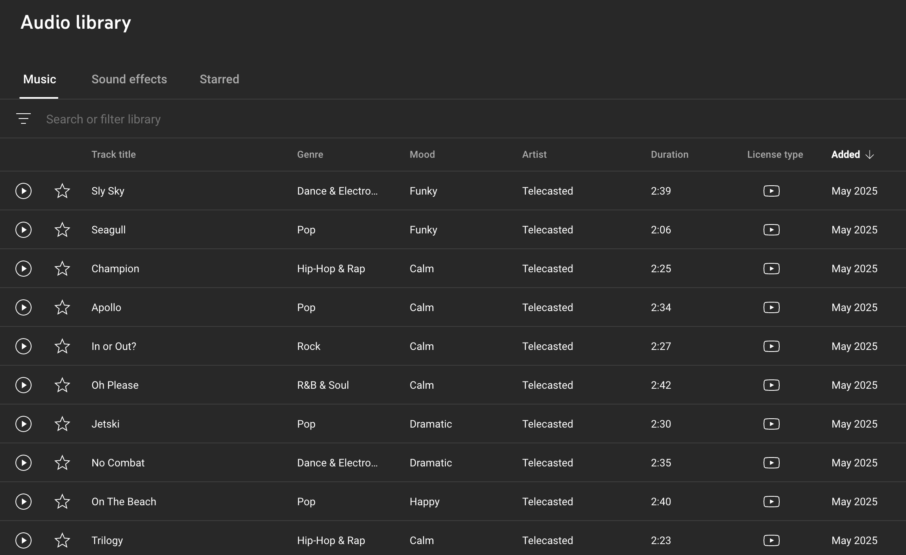

For longer videos that I create, such as traveling vlogs and other combinations, I upload them on YouTube. This also allows me to share the videos without utilizing large storage space on my laptop.
A limitation of YouTube is the copyright, so I mostly utilize sounds from the YouTube audio library. The audios in the YouTube audio library are handy for background music for the videos as they mostly don't have words. I also loop the audios by utilizing fades in Premiere Pro and taking advantage of the volume levels to ensure a smooth transition between sounds.
Another strength of the YouTube platform is the analytics it can provide. After my Digital Marketing class, I've learned to utilize analytics to see what content viewers enjoy. If I were to turn my channel from a personal to a professional/business channel, I would use this to create content, and I would also utilize the customization provided by YouTube to show viewers a consistent ending clip.
Through YouTube, I trained myself to edit more parts of the video manually, such as adding Chinese/English captions, and creating frames/effects. By creating the captions myself, I can relay texts that may be lost in translation. For these videos, I utilized Premiere Pro for video editing and Procreate/Photoshop to edit the thumbnail. For effects, such as the vintage film, I utilized effects from Adobe Stock.